通用AI动手课的动手环节
亲爱的同学们，发挥你们的聪明才智、发挥你们的想象力，让我们Just do it！
金币动手环节
任务：
- 1、用Gemini、GPT、豆包、元宝等各种大模型生成一张纪念金币的图片，用各种可能的模型尺寸尝试效果。效果最佳者和最差者有奖。
- 2、将这个纪念币改成部门或家庭所用的纪念币。
- 3、讲讲你的感受和收获。
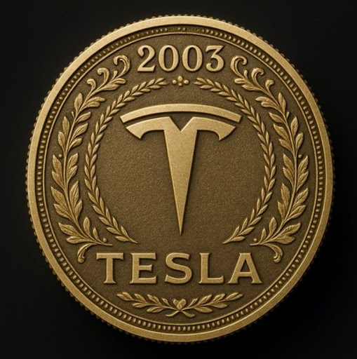
Prompt:
中文提示词：
真人卡通化
这个任务如下：
- 1、选用一张自己或家人的照片
- 2、按某种动画风格（比如宫崎骏、皮克斯）将人物卡通化
- 3、将卡通化的照片发到群里
- 4、效果最佳或者最有特色者获奖
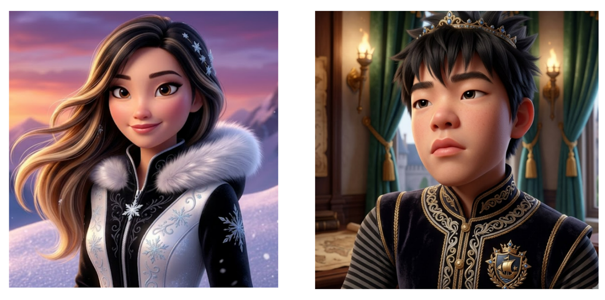
逆向提示词工程
这个任务如下：
- 1、以图反推，反向得到图片生成的提示词
- 2、用英文提示词和中文提示词都进行尝试图片生成尝试，并生成实用的类似图片，可以利用各种模型
- 3、你的感想和体会
图片可以自己去互联网上找，也可以直接在这个网站上Pinterst.com找，或者直接用下图
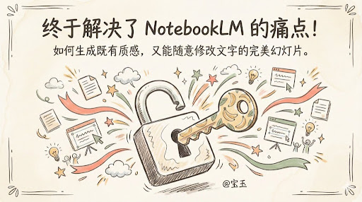
提示词工程进阶
这个任务如下：
- 1、访问：https://www.aiwind.org/ 或者 https://www.pinterest.com/
- 2、找到一张你觉得非常好的图片，导入大模型，输入：帮我生成可复现这张图质感的详细JSON参数，包含光影、色彩、镜头、画质、质感底层属性，适配AI写实作图场景
- 3、生成后直接全选复制JSON代码，并在后面加上“基于上述JSON参数，生成一个图片：两位女机器人，参加一场机器人格斗比赛，一个在出长拳，一个在双手交叉防守，撞击时闪出火花。保持画面写实质感不变。图片尺寸：16:9”
- 4、效果最佳者获得奖励
圣诞营销海报的制作
这个图出自：
https://www.aiwind.org/prompt/christmas-special-christmas-skincare-set-promotion-card-895
这个任务如下：请使用各种可能的方式，用AI做一个这种风格的华为freeclip2产品的圣诞促销海报。
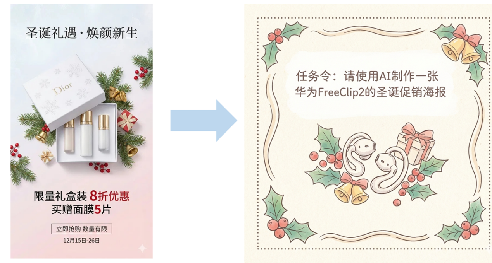
宜家风格的卧室装修
空房子来源：
https://q7.itc.cn/images01/20250117/96a1d9ed448d4b44b663b34d3fac9aea.jpeg
可以用这个空房子资源，也可以自己找，或者用AI生成一个空房子图像。
把这个空房子摆上家具家电，请变为一个宜家风格的卧室。
效果最佳者获奖
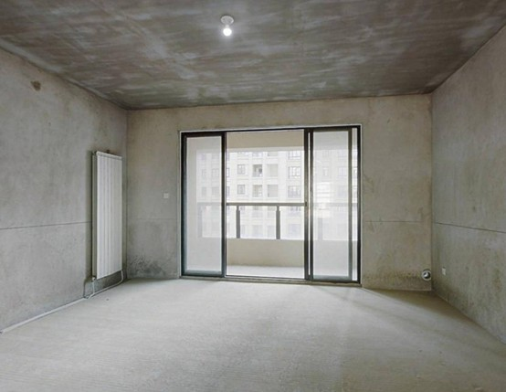
如何去除Gemini生成图片的水印标志
任务：
- 1、打开：https://clean.picgo.studio/
- 2、输入一个Gemini生成或加工后的有水平图片
- 3、获得一个无水印的图片
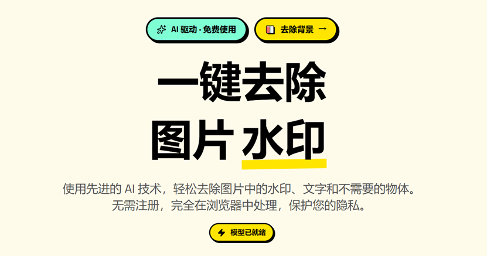
AI时代，设计就是资产：推荐两种百搭型的风格，适合在工作和生活中使用
展现一个场景：一位亚裔女设计师灵感迸发，跪在地上，各种设计稿从手中的便携机上迸发出来。比例3:4
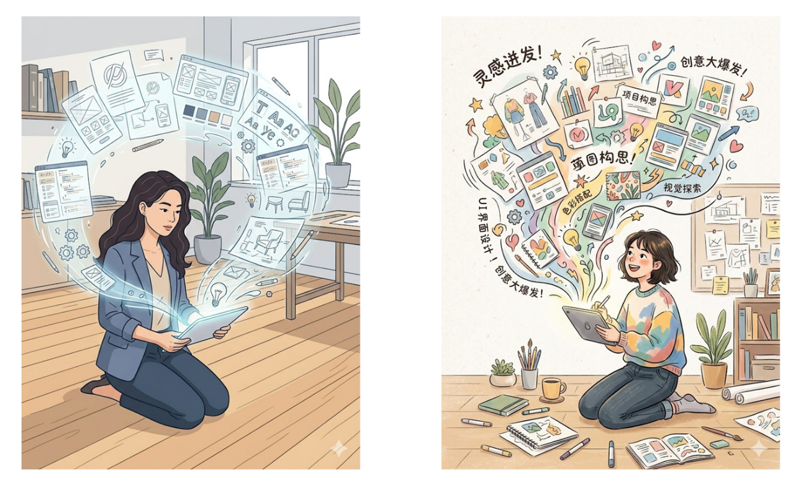
1）视觉风格：
- · 媒介和类型：现代数字插图，矢量艺术风格，干净的平面设计插图，网络插图。
- · 线条艺术：干净、精确且一致的线条艺术轮廓；清晰的边缘；受控的线宽。
- · 色彩和色调：有限且柔和的平面色彩调色板；米色、柔和的蓝色和浅灰色等柔和色调；没有复杂的纹理或颗粒。
- · 阴影和渲染：极少且平面的阴影（没有写实深度或高光）；完全避免复杂的阴影或反射。
- · 纹理和表面：光滑、抛光和清洁的表面；没有纸张纹理、帆布纹理或粗糙度。
- · 人物和形式：风格化和简化的人形，具有友好的比例和面部特征。
- · 构图和细节：结构化和模块化布局（如 UI 网格）；简约的细节；简化的图标和文本表示（不是实际的文字）；抽象和简化的真实对象（如一堆纸和屏幕内容）。
- · 整体感觉：专业、干净、协作和以用户为中心。
2）视觉风格：
插画或手绘感，采用柔和插画或轻松手绘笔触，增强亲和力与友好度；背景颜色采用带有细微纹理的柔和米白色，带细微纹理；字体使用中文手写圆体；连接线条带有手绘波浪感，不完全笔直
推荐
推荐几个非常棒的高质量文生图样例网站。
- https://sora.chatgpt.com/explore
- https://www.aiwind.org/
- https://www.lovart.ai/zh/home
- https://www.pinterest.com/
即梦首页的灵感部分也非常棒！
马斯克太空AI的研究
任务如下：
- 1、最近网络上报道马斯克要建设太空AI，这个太酷了，怎么回事？
- 2、请用AI去深入寻找这个问题的答案，尤其是其中的原理、困难和问题
- 3、假设我们都是一群中学生，请你用易懂有趣的语言，和我们讲讲这个东西到底是怎么回事？
- 4、分享你的感受和体会
视频流萃取
任务如下：
- 1、请在网上搜索一段时间较长的视频（半小时到2小时之间），最好是youtube上的科技视频或产品发布会，比如Andrej Karpathy的视频或者华为产品的发布会
- 2、我不想看那么久，请用AI去读视频，帮我总结要点
- 3、更进一步，在视频出现PPT的时候，要有时间戳以及分析
- 4、分享你的感受和体会
可以用这个视频：https://www.youtube.com/watch?v=ww92ick66H0
小红书爆款写手
任务如下：
- 1、你是公司的营销部门专家，日常的工作是定期在小红书上发布公司的产品营销贴
- 2、构想今天要发布的内容，并在之后加入“你需要把任何枯燥的输入内容，转化为小红书风格的种草文案。多用 Emoji，语气要像闺蜜聊天，标题必须包含悬念和数字。每段不超过 3 行。”提示词
- 3、效果最佳者获得奖励
用AI定机票
这是美国夏校发来的安排，孩子是S2（第二期），请你用AI协助预定机票。
另外，学校离机场不远，大致半小时车程。
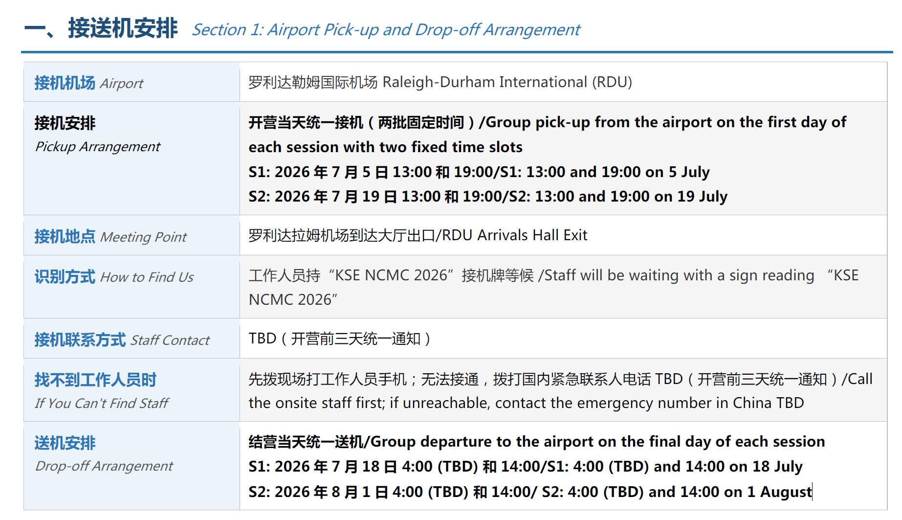
Deep Research
任务如下：
- 1、打开Gemini的Deep Research选项
- 2、输入“选取2019年到2025年，每年选取15个GDP最大的国家，列出国家名和GDP，同时再选取10个市值最大的公司（以年底最后一天的市值算），列出公司名和市值。数据提供后，给出主要的分析要点。 ”
- 3、观看AI的Deep Research过程和结果
- 4、你的体会和感想
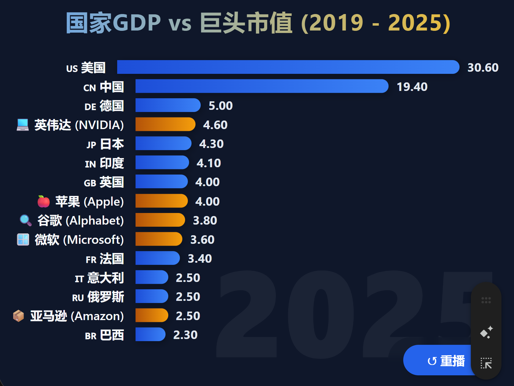
餐饮店的AI顾问
任务如下：
- 1、我想在自己小区附近开一个餐馆
- 2、但我是一个小白，想请AI帮我参谋参谋，怎么开好餐馆
- 3、效果最佳者获得奖励
- 4、你的体会和感想
关于生成AI视频的软件选择
推荐课堂可用：
- 1、快手的可灵（要交钱），整体不错，可以用真人形象做AI视频
- 2、Gemini的视频制作，每天有三个免费额度，或者https://labs.google/flow/about有免费额度
- 3、即梦网页版的Seedance 2.0，效果好，但贵、速度太慢
- 4、手机版的豆包或即梦
AI视频制作
任务如下：
- 1、从我推荐的网站中搜索一个具有科幻色彩的图片
- 2、逆向工程得到提示词和重新生成高质量图片
- 3、制作小视频
- 4、效果最佳者有奖
制作有前后帧和逻辑的AI视频
任务如下：
- 1、从我推荐的网站中搜索一个有意思的图片
- 2、在此基础上加工形成另外一张图片作为尾帧，或者自己再选另外一张图作为尾帧
- 3、按你的意图请AI制作视频脚本，并生成视频
- 4、效果最佳者有奖
动手做一个稳定清晰表达的导演型视频
最稳的结构: 主体＋动作+场景+时间/光线+镜头语言+风格/ 质感+画质+约束
举例如下：
- 主体：一位东南亚小男孩，10岁，短发，穿黄色短袖黑色短裤
- 动作：在街上欢快地奔跑
- 场景：东南亚小镇上的街道上，各色招牌，非常有东南亚特色
- 光线：多云的一天，下午，柔和光线
- 镜头：人物正面中景起步，镜头环绕大半周到侧后，平稳跟拍，最后人物跑远
- 风格：写实电影感，轻微景深，肤色自然
- 画质：高清细节，纹理清晰
- 约束：动作连贯不抽搐，面部不崩坏，画面不闪烁，不要文字水印
任务：
按这个架构，自己写提示词生成视频，效果最佳者获奖
如何固定主角，使人物具有一致性？
1）人物形象生成：
帮我生成三个人物形象，古代Q版动画3D风格，穿着宋朝服饰，简单可爱，具有丰富的吸引力。比例2:1。3个人物分别是：70岁左右的古代老人，7岁左右的古代男童，7岁左右的古代女童。每个人物独立生成一张图，一共三张图。
2）视频生成第一段
图片1是古代老人，图片2是古代男孩，图片3是古代女孩。
场景一：春天·树下嬉戏 巨大的树木抽出嫩绿新芽，草地铺满鲜绿小草，远处山坡野花星星点点，几只彩色蝴蝶在花丛中飞舞。小男孩被小女孩追着绕树奔跑，时不时回头做鬼脸，小女孩边跑边笑，老爷爷坐在树下石凳上，双手撑着拐杖，笑眯眯地看着两个孩子
场景二：夏天·花瓣雨中 树木枝繁叶茂，树冠如巨大绿伞，满树粉色花朵盛开，微风拂过，粉色花瓣如雪花般飘落。小男孩和小女孩停下奔跑，站在树下伸手接飘落的花瓣，小男孩将花瓣别在小女孩发间。
场景三：秋天·落叶满地 树叶全部变成金黄色，秋风卷起落叶在空中打着旋儿飘落，地面铺满厚厚的金黄落叶，像一张金色地毯。小男孩和小女孩踩在落叶上，发出“咯吱咯吱”的声响，小男孩捡起一片大叶子当成小伞举在头顶，小女孩蹲在地上堆落叶小堆，老爷爷慢慢站起身，伸手接住一片飘落的落叶，眼神温柔
场景四：冬天·白雪皑皑 树木枝干挂满白雪，像披上了白色披风，地面覆盖着厚厚的白雪，整个世界银装素裹。小男孩和小女孩戴着棉帽、手套，在雪地里追逐打闹，小男孩抓起一团雪扔向小女孩，小女孩笑着躲闪，老爷爷双手拢在袖子里，看着两个孩子，脸上满是慈爱
四个场景确保是同一颗大树，只是不同季节有不同的外观。
3）视频生成第二段
图片1是古代老人，图片2是古代男童，图片3是古代女孩。
古色古香的元宵灯会主街，两侧挂满红色宫灯、兔子灯，街道上人潮涌动，远处可见城楼轮廓，老人左手牵男童、右手牵女童，三人面带笑容缓慢前行；
男童左顾右盼，手指向左侧的鱼灯；女童紧紧拉着老人的手，眼神好奇地张望四周；街边灯笼摊位，挂满形态各异的灯笼（荷花灯、麒麟灯、走马灯等），摊位前有其他游客在挑选，老人停在摊位前，弯腰询问摊主价格；男童挣脱老人的手，跑到摊位前伸手触摸走马灯；女童站在老人身边，手指着一盏粉色荷花灯，抬头看向老人；
街头空地上，一位穿着戏服的艺人正在表演“喷火”魔术，周围围满了叫好的观众，地上摆着艺人的道具箱，老人抱着女童站在人群外围，老人拍手叫好；男童挤到人群前排，瞪大双眼看着艺人喷火，嘴巴张开露出惊讶表情；女童趴在老人肩头，双手捂住眼睛但指缝露出缝隙偷看；
灯会街道尽头的小山坡，能看到一轮又大又圆的明月挂在夜空，下方是灯火通明的城市夜景，人坐在山坡的石头上，男童和女童分别坐在老人两侧；男童举着刚买的走马灯，女童抱着荷花灯；三人一同抬头看向明月，脸上露出满足的笑容
Seedance 2.0的智能多帧---产品爆炸视频制作
步骤：
1）搜索一个华为的产品（或者其他东西也可以），找出一张比较完美的宣传图
2）用图形生成终极产品爆炸分解图，提示词如下（自己需要稍加修改）：
3）用图形生成：生成不同角度的产品特写摄影，不同景别，浅灰色背景
4）视频生成：智能多帧模式
「动态提示词1」
「动态提示词2」
Seedance 2.0的全能参考模式
参考视频《小米变形金刚.mp4》和如下的图：
任务：和老师一起动手做这个视频
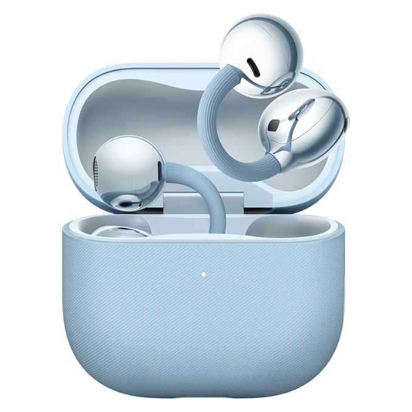
推荐课后阅读
B站首发!!!Seedance 2.0全网最全的实战用法合集！
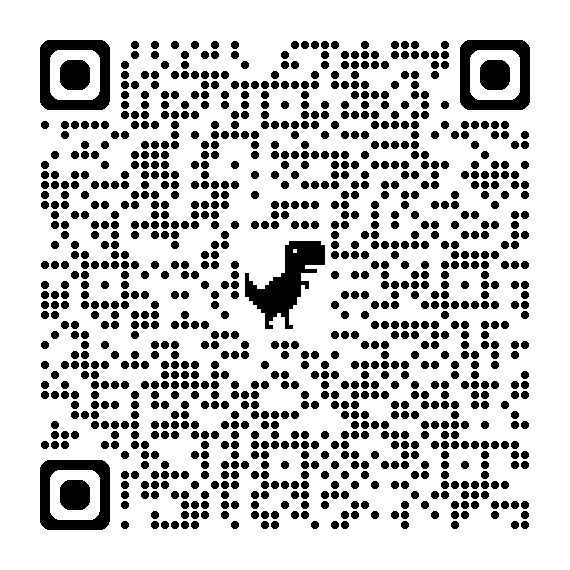
AI音乐制作
任务如下：
- 1、用手机打开QQ音乐，尝试“AI作歌”；或下载VEMUS APP，尝试图片生成音乐；或用Gemini生成30秒音乐；或网易云搜索“AI写歌”；或者用SUNO；
- 2、思考你的诉求，填上你的想法和背景、素材，请AI帮你生成AI音乐
- 3、效果最佳者有奖
- 4、附加任务：回家为这首歌曲剪个视频吧！
演示：Gem中的“灵感源泉”体验
任务如下：
- 1、打开Gem中的“灵感源泉”
- 2、思考你想办的活动，比如和客户合办5G展会，巴展活动，孩子生日派对，华为family day，部门团建或者开餐馆，开奶茶店，或者去瑞士旅游，越有新意越好
- 3、和“灵感源泉”持续对话，看能不能获得灵感
- 4、分享体会和感受
创建你的第一个Gem
2）如下：
- 1、还记得前面推荐的绘画百搭风格的提示词吗？
- 2、就用这个提示词，生成一个专门形成特定风格图片的Gem
- 3、Run it，从此你拥有一个专业的画师助手
1）视觉风格：
- · 媒介和类型：现代数字插图，矢量艺术风格，干净的平面设计插图，网络插图。
- · 线条艺术：干净、精确且一致的线条艺术轮廓；清晰的边缘；受控的线宽。
- · 色彩和色调：有限且柔和的平面色彩调色板；米色、柔和的蓝色和浅灰色等柔和色调；没有复杂的纹理或颗粒。
- · 阴影和渲染：极少且平面的阴影（没有写实深度或高光）；完全避免复杂的阴影或反射。
- · 纹理和表面：光滑、抛光和清洁的表面；没有纸张纹理、帆布纹理或粗糙度。
- · 人物和形式：风格化和简化的人形，具有友好的比例和面部特征。
- · 构图和细节：结构化和模块化布局（如 UI 网格）；简约的细节；简化的图标和文本表示（不是实际的文字）；抽象和简化的真实对象（如一堆纸和屏幕内容）。
- · 整体感觉：专业、干净、协作和以用户为中心。
2）视觉风格：
插画或手绘感，采用柔和插画或轻松手绘笔触，增强亲和力与友好度；背景颜色采用带有细微纹理的柔和米白色，带细微纹理；字体使用中文手写圆体；连接线条带有手绘波浪感，不完全笔直
1）输入一
展现一个场景：一位亚裔女设计师灵感迸发，跪在地上，各种设计稿从手中的便携机上迸发出来。比例3:4
2）输入二
做一张画，表达的意思这次培训仅仅是打开世界级AI应用的一点点门缝……
有个小男孩，正在推开一个宏伟而巨大的门，门刚刚露出一个门缝。门后是一个宏伟而绚丽的AI新世界。
3）输入三
标题：欢迎同学们参加有趣的通用AI动手培训
专业插画师
任务如下：
- 1、将老师发送的提示词做成“专业插画师”Gem
- 2、使用Gem，按“+“，导入代码，输入：https://github.com/siatwangmin/koktokay_travel，这篇文章内容是可可托海之家庭度假型滑雪攻略
- 3、Run it，生成插画。看看谁抽的卡最好，运气最佳者获奖
- 4、从此，你拥有了一位专业而神奇的插画师
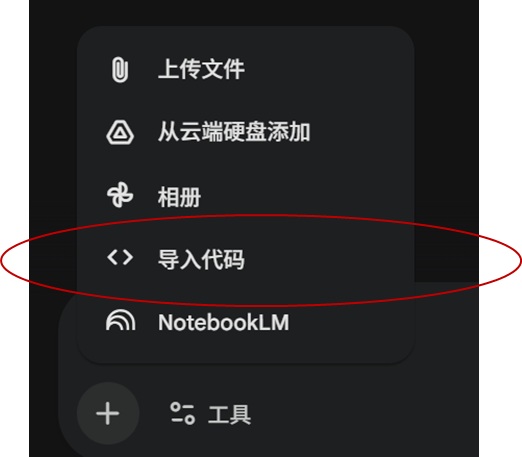
说明：如果无法导入，可以打开网址，把文本内容拷贝后，复制到对话框中。
几个特别提醒：
- 1、全程请务必选择pro模型，不要用快速模型；
- 2、如果老师提供的网址Gem读不了（部分低权限的谷歌用户没有这个选项），那就拷贝这个网页的内容，直接贴入Gem输入框也是可以的；
- 3、这个Gem只会生成插画设计，在设计完成后，请调用Nano Banana输入“请生成第一张插画”、“请生成第二张插画”、“请生成第n张插画”；
- 4、作品完成后，将其拷贝进一个PPT，发到群里。不要单独发插画进去。；
体验storybook
任务如下：
- 1、使用storybook Gem，按“+“，导入：https://github.com/siatwangmin/koktokay_travel
- 2、Run it，生成故事书。不满意可以调整。
- 3、最佳者获奖
Canvas动手
任务如下：
- 1、选择一个有趣的主题、大胆的主题或实用的主题
- 2、使用Canvas，和AI一起共创，持续迭代
- 3、效果最佳者有奖
NotebookLM动手
任务如下：
- 1、利用NotebookLM的Deep Research功能，研究一个你特别感兴趣或者要学习的领域
- 2、写好定制提示词，完成一份胶片、一个信息图和视频概览
- 3、在对话框中持续对话，持续学习，生成一份面向特定场景的演讲文稿
- 4、后续请继续探索播客、思维导图、测试等各种功能
- 5、谈谈你的感受和体会
胶片可以自定义风格，大家可以看这篇文章：
2025最新！NotebookLM一键出专业PPT，10套神级提示词直接抄
用Canvas生成PPT
任务如下：
- 1、在前面的Deep Research环节，我们对国家GDP和大公司市值的变化做了深入分析
- 2、在此基础上，利用CANVAS完成PPT胶片，并下载
- 3、效果如何，谈谈你的感受
探索试用Gamma
任务：
- 1、推荐注册：https://gamma.app/signup?r=hppt1fqpe8i8i3e
- 2、选择自己写的文章或者网上一篇文章
- 3、利用Gamma生成一套胶片
- 4、对不满意的地方尝试修改，下载胶片
- 5、效果最好者获得奖励
超级综合练习
要求大家综合使用各类工具（Gemini，Canvas，NotebookLM，Gamma等），完成学习、头脑风暴、材料制作等工作，每个工具都要尝试，输出PPT、视频、信息图等各种形式的产出
参考方法：用AI辅助生成胶片的大型尝试
可以选择下面的题目，也可以自己选择感兴趣或者下一步学习或工作需要研究的课题：
题目一：哲学
孔子和苏格拉底几乎是同时代的哲学家，他们的哲学理论有什么不同，对后世东西方发展有什么重大意义？
题目二：经济学
请对过去一年全球主要股票市场进行分析，哪些国家的股票市场表现最好，哪些表现最差，原因何在？为什么？
或者：
过去几年，中国正在经历房地产市场的崩塌，核心原因何在？对中国发展的影响如何？美国、日本等国家的类似房地产泡沫破灭的经济灾难是怎么样过来的，对中国有何借鉴意义？
或者：
研究华为过去十年的财务报表，有什么深入的发现？
题目三：管理科学
过去有本很有名的管理书籍《基业长青》，里面列举了当时公认最好的18家公司，分析：
- 1、当时这些公司为什么公认最好，甚至认为会基业长青？
- 2、这些公司后来怎么样了？是不是真的基业长青？
- 3、对比一下现在Top 10市值的公司，你有什么分析结论？
题目四：创新理论和案例研究
有个著名的双联想（Bisociation）创新理论，里面有个著名的约翰内斯·古腾堡（Johannes Gutenberg）发明活字印刷机的案例，请分析这个案例，和大家分享创新的故事、创新的底层逻辑。
题目五：AI研究
AI时代一个显著的现象是提供AI核心产品的大公司的财富涌现效应，出现了富可敌国的现象，就是说一些顶级公司的市值和一些大国的GDP几乎相同，请分析这种情况，并给出结论。
或者：
请深入研究马斯克畅想的太空AI计划
题目六：历史
你要给学生上一门有趣的课，就是历史上，冷兵器如何热兵器转换。你可以多个角度研究、分析，并分享给你的学生们。
或者：
美国清教徒是如何产生的？清教徒文化的关键点在哪里？清教徒文化如何影响美国的发展？
或者：
全球四大古文明的产生、历史、特点以及对当今文明的影响
或者：
西班牙的殖民和中国明朝的发展与灭亡的关系
或者：
请研究常德的历史、名人和当前经济情况
题目七：慈善志工培训
我要向新的中国大陆范围内慈济志工进行培训。请研究一下台湾慈济这个组织的历史由来，特点以及在大陆的推广策略。并且，我要为下一次蛇口小学生的环保课堂做一个发言稿。
重点聚焦：
- 1、慈济的历史
- 2、突出慈善，而不是宗教色彩
- 3、在中国大陆范围内，要注意的事项
题目八：生物
人类是如何演进，最后如何成为地球的霸主，经过哪几个阶段？最关键的技能进化是什么？
题目九：军事
请研究最近美国和以色列对伊朗的军事战争，其打法有什么新的特点，和新技术的关系如何？并对比俄乌战争，有什么发现？
第一次AI编程
任务：
- 1. 我想知道自己加入华为后到底在公司奋斗了多少天。有些特别的日子，比如“1111”天发个朋友圈纪念一下。
- 2. 用各种大模型（豆包、DS、千问、Gemini等）去问问，看能不能得到答案。
- 3. 试用谷歌canvas和字节的Trae进行你人生的第一次AI编程
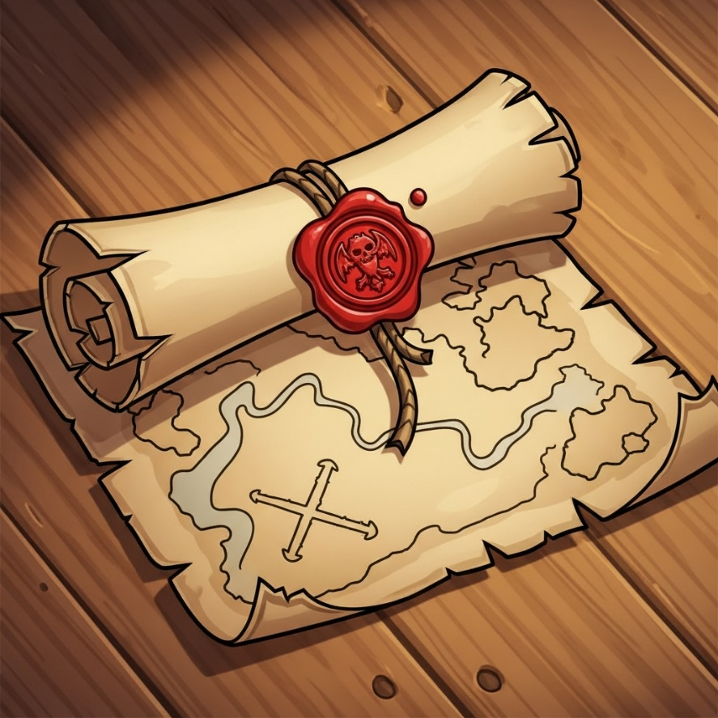
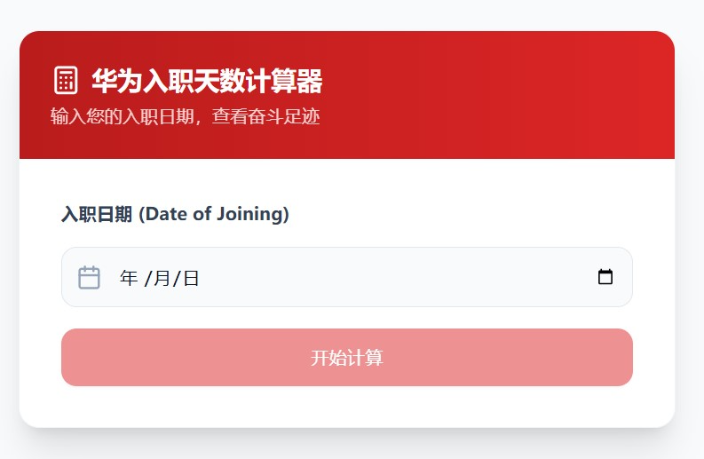
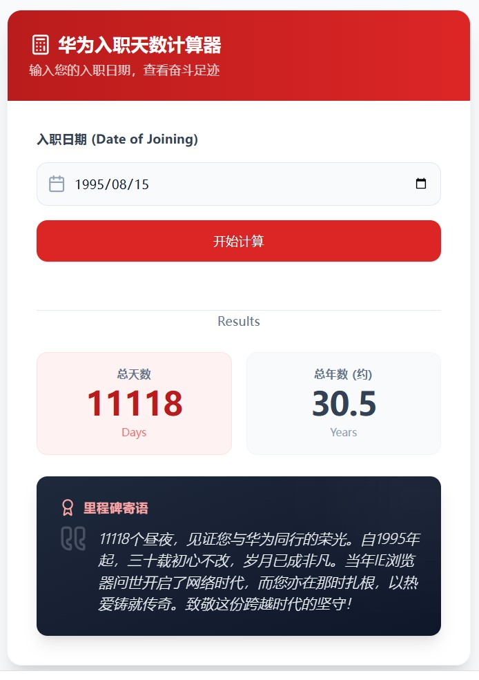
进阶编程挑战
任务：
你要去一个中学开展一次AI基础知识的普及课，在课后，需要给所有的学生做一个考试，考试内容就是今天所讲的AI基础知识，考题类型包括对错题、单选题和多选题，学生的考题需随机（不能每人一样），总分100分，80分为合格。
工作的三个步骤：
- 1）整个小组一起讨论怎么完成这个工作，能不能做个SOP？
- 2）每个同学用Trae来实现这个AI编程
- 3）完成后分享感受
- 4）速度最快、质量最高的获得“AI编程冠军”大奖